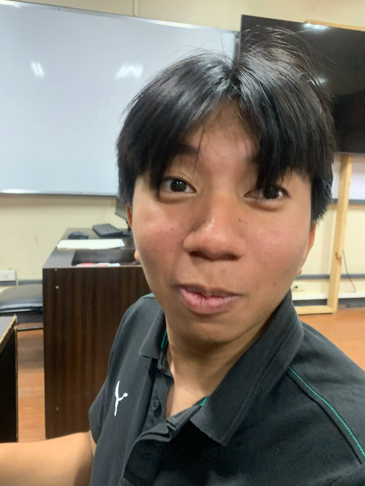

Hello! My name is Jose Miguel V. Carumba and I created this website to
help people who want to exchange or sell their old books. The idea of
this website came to fruition when I have observed that people from the
University of San Carlos were finding books and because of many post,
their request would get buried and would not get replies or recognized.
This is why I created EduCycle.
